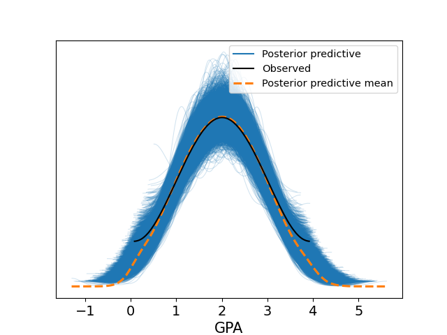
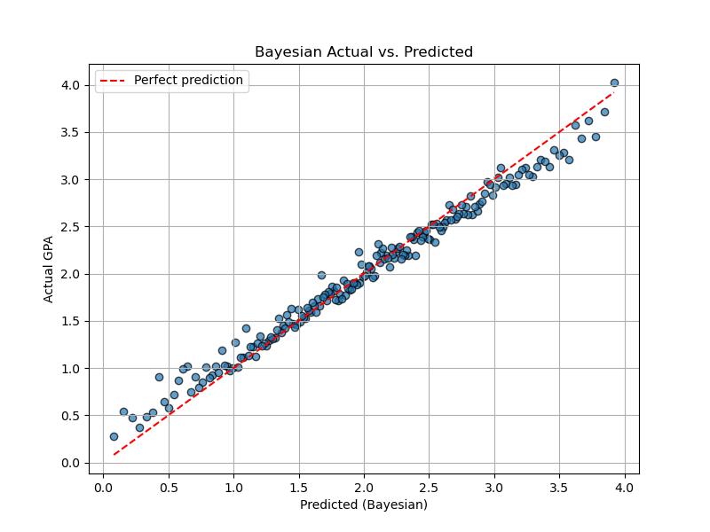
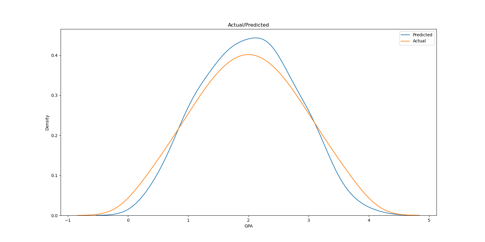
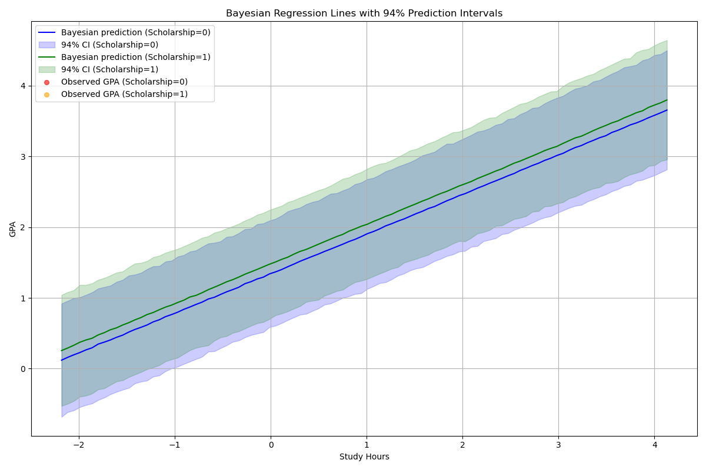
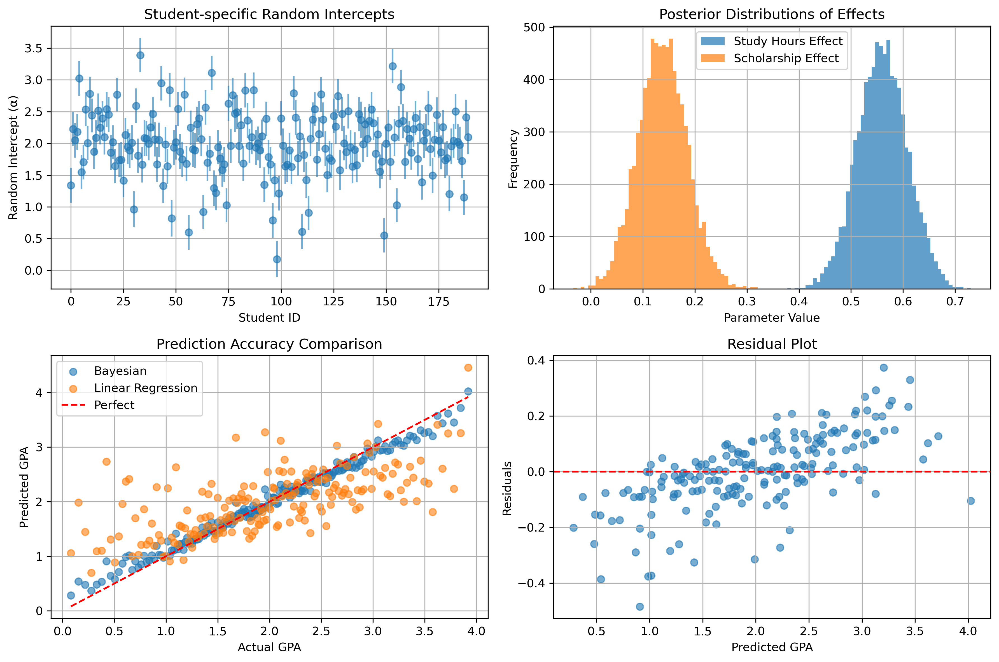

結果の可視化
MCMC の実行で推定したモデルの説明能力について可視化していきます.
事後予測チェック (Posterior Predictive Check, PPC)
事後予測チェックは, 推定されたモデルが実際のデータをどれだけよく説明できるかを確認するための手法です. 具体的には, 推定された事後分布から新しいデータを生成し, その分布が実際の観測データとどの程度一致しているかを可視化します.
idata = trace
# 事後予測サンプルを (chain, draw) で平らに並べる
ppc_samples = idata.posterior_predictive["GPA"].stack(sample=("chain", "draw"))
n_show = min(100, ppc_samples.sizes["sample"])
rng = np.random.default_rng(0)
sample_idx = rng.choice(ppc_samples.sizes["sample"], size=n_show, replace=False)
fig, ax = plt.subplots(figsize=(10, 6))
for i in sample_idx:
sns.kdeplot(ppc_samples.isel(sample=int(i)).values,
color="C0", alpha=0.1, lw=1, ax=ax)
ax.plot([], [], color="C0", alpha=0.6, label="Posterior predictive draws")
ppc_mean = idata.posterior_predictive["GPA"].mean(dim=("chain", "draw")).values
sns.kdeplot(ppc_mean, color="C1", label="Posterior predictive mean", lw=2, ax=ax)
sns.kdeplot(df["GPA"], color="black", label="Observed", lw=2, ax=ax)
ax.set_title("Posterior Predictive Check")
ax.set_xlabel("GPA")
ax.legend()
plt.savefig(save_dir + 'ppc.png')
plt.close()idata = trace: MCMC の実行でのpm.sample_posterior_predictive(trace, extend_inferencedata=True)によって,trace(InferenceData) には既にposterior_predictiveグループが含まれています. そのまま参照を別名で受けるだけで, 事後予測分布にアクセスできます.idata.posterior_predictive["GPA"].stack(sample=("chain", "draw")):(chain, draw)という 2 つの軸を 1 本のsample軸にまとめて, 1 サンプル単位で取り出しやすい形に整えます.for i in sample_idx: ランダムに選んだ 100 本の事後予測サンプルを KDE で薄く重ね描きします. これが「事後予測分布の範囲」を表す青い帯になります.ppc_mean = ... .mean(dim=("chain", "draw")): すべてのチェーン・ドローを平均した「事後予測平均」をオレンジで描き, 観測データを黒で重ねます.
arviz>=1.0 では plot_ppc が arviz-plots サブパッケージに切り出されたため, バージョンによっては import arviz as az した状態で az.plot_ppc が見つからず
AttributeError: module 'arviz' has no attribute 'plot_ppc'というエラーになります. 上記のコードでは, バージョン依存を避けるために matplotlib/seaborn で同等のプロットを直接構築しています.
なお, 以前のコード例で使っていた idata = trace.copy(); idata.extend(posterior_predictive) という書き方は, 新しい arviz/xarray では trace.copy() が DataTree を返すため AttributeError: 'DataTree' object has no attribute 'extend' が発生します. MCMC の実行では sample_posterior_predictive に extend_inferencedata=True を渡して trace へ直接追加する書き方を採用しています.

この図は, 観測データ (黒い実線) と事後予測分布 (青い領域) を比較しています.
- 黒い実線: 実際に観測された GPA データの分布です.
- 青い領域: 推定されたモデルから生成された事後予測分布です. 複数のサンプルから生成された分布の範囲を示しています.
- オレンジの実線: 青い実線の平均値
観測データの分布が事後予測分布の範囲内 (青い線の範囲) に収まっている場合, モデルはデータを適切に説明していると判断できます. 一方, 観測データの分布が事後予測分布から大きく外れている場合, モデルの仮定や構造を見直す必要があります.
この例では, 観測データの分布が事後予測分布の範囲内に収まっており, モデルがデータを適切に説明していることが確認できます.
予測値の確認
重回帰での結果確認と同様に予測値と実測値の関係と kde プロットを見てみましょう. まずは予測値を取り出します.
# 事後予測分布から予測値(平均)を取り出す
posterior_mean = idata.posterior_predictive["GPA"].mean(dim=("chain", "draw")).values
# MSEを計算
bayes_mse = mean_squared_error(df["GPA"], posterior_mean)
print(f"[階層ベイズモデルのMSE] {bayes_mse:.4f}\n")idata.posterior_predictive["GPA"]: 事後予測分布から生成された GPA のサンプルです. このデータは, 複数のチェーン (chain) と複数のドロー (draw) から構成される多次元配列です..mean(dim=("chain", "draw")): すべてのチェーンとドローにわたって平均を計算します. これにより, 各観測値について, 事後予測分布の平均値 (期待値) を取得できます. つまり, 各学生の GPA について, モデルが予測する平均的な値を計算しています..values:xarrayのデータ配列を NumPy 配列に変換します. これにより, 後続の計算や可視化で使用しやすくなります.mean_squared_error(df["GPA"], posterior_mean): 実測値 (df["GPA"]) と予測値 (posterior_mean) の間の平均二乗誤差 (MSE) を計算します. この値が小さいほど, モデルの予測精度が高いことを示します.
# プロット
plt.figure(figsize=(8, 6))
plt.scatter(df['GPA'], posterior_mean, alpha=0.7, edgecolors="k")
plt.xlabel("Predicted (Bayesian)")
plt.ylabel("Actual GPA")
plt.title("Bayesian Actual vs. Predicted")
plt.plot([df['GPA'].min(), df['GPA'].max()],
[df['GPA'].min(), df['GPA'].max()],
color="red", linestyle="--", label="Perfect prediction")
plt.grid()
plt.legend()
plt.savefig(save_dir + 'bayes.png')
plt.close()
plt.figure(figsize=(16,8))
sns.kdeplot(posterior_mean, label = 'Predicted')
sns.kdeplot(df['GPA'], label = 'Actual')
plt.title('Actual/Predicted')
plt.xlabel('GPA')
plt.ylabel('Density')
plt.legend()
plt.savefig(save_dir + 'bayes_kde.png')
plt.close()

予測値, 分布共に大幅に改善されていることが分かります.
予測範囲の可視化
線形モデルとは異なり, 分布を推定しているため, 勉強時間と奨学金の有無による GPA の予測値と, その不確実性 (94% 予測区間) を可視化することが可能です. 奨学金の有無で異なる予測線を描画し, モデルの説明能力を確認します.
# x軸用の study_hours の範囲（100点）
study_grid = np.linspace(df["Study_Hours"].min(), df["Study_Hours"].max(), 100)
# 奨学金なしの予測
predict_df_0 = pd.DataFrame({
"Study_Hours": study_grid,
"Scholarship_True": 0,
"StudentID": 0
})
# 奨学金ありの予測
predict_df_1 = pd.DataFrame({
"Study_Hours": study_grid,
"Scholarship_True": 1,
"StudentID": 0
})
# より簡単な方法：事後分布から直接予測
# 事後分布のサンプルを取得（新しいAPIを使用）
posterior_samples = az.extract(trace)
# 予測計算
n_samples = len(posterior_samples.draw)
n_grid = len(study_grid)
# 予測値を格納する配列（奨学金なし・あり）
predictions_0 = np.zeros((n_samples, n_grid))
predictions_1 = np.zeros((n_samples, n_grid))
# パラメータを一度に取得
mu_alpha_vals = posterior_samples.mu_alpha.values
sigma_alpha_vals = posterior_samples.sigma_alpha.values
z_alpha_vals = posterior_samples.z_alpha.values # 全学生のz_alpha
beta_st_vals = posterior_samples.beta_st.values
beta_ss_vals = posterior_samples.beta_ss.values
for i in range(n_samples):
# 各サンプルでのパラメータ（学生0の切片を計算）
alpha_0 = mu_alpha_vals[i] + sigma_alpha_vals[i] * z_alpha_vals[0, i] # 学生0の切片
# 奨学金なしの予測値の計算
mu_pred_0 = alpha_0 + beta_st_vals[i] * study_grid + beta_ss_vals[i] * predict_df_0["Scholarship_True"]
predictions_0[i, :] = np.random.normal(mu_pred_0, 0.3)
# 奨学金ありの予測値の計算
mu_pred_1 = alpha_0 + beta_st_vals[i] * study_grid + beta_ss_vals[i] * predict_df_1["Scholarship_True"]
predictions_1[i, :] = np.random.normal(mu_pred_1, 0.3)
# 平均と予測区間（94%）
mean_pred_0 = np.mean(predictions_0, axis=0)
lower_pred_0 = np.percentile(predictions_0, 3, axis=0)
upper_pred_0 = np.percentile(predictions_0, 97, axis=0)
mean_pred_1 = np.mean(predictions_1, axis=0)
lower_pred_1 = np.percentile(predictions_1, 3, axis=0)
upper_pred_1 = np.percentile(predictions_1, 97, axis=0)
# 実データも合わせて表示（奨学金の有無で色分け）
plt.figure(figsize=(12, 8))
# 奨学金なしの予測線
plt.plot(study_grid, mean_pred_0, color="blue", label="Bayesian prediction (Scholarship=0)")
plt.fill_between(study_grid, lower_pred_0, upper_pred_0, color="blue", alpha=0.2, label="94% CI (Scholarship=0)")
# 奨学金ありの予測線
plt.plot(study_grid, mean_pred_1, color="green", label="Bayesian prediction (Scholarship=1)")
plt.fill_between(study_grid, lower_pred_1, upper_pred_1, color="green", alpha=0.2, label="94% CI (Scholarship=1)")
# 奨学金の有無で実測値を色分け
scholarship_0 = df[df["Scholarship_True"] == 0]
scholarship_1 = df[df["Scholarship_True"] == 1]
plt.scatter(scholarship_0["Study_Hours"], scholarship_0["GPA"],
color="red", alpha=0.6, label="Observed GPA (Scholarship=0)", s=30)
plt.scatter(scholarship_1["Study_Hours"], scholarship_1["GPA"],
color="orange", alpha=0.6, label="Observed GPA (Scholarship=1)", s=30)
plt.xlabel("Study Hours")
plt.ylabel("GPA")
plt.title("Bayesian Regression Lines with 94% Prediction Intervals")
plt.legend()
plt.grid(True)
plt.tight_layout()
plt.savefig(save_dir + "bayes_prediction_band.png")
plt.close()
予測区間内に実測値が多く含まれており, モデルがデータを適切に説明していることが確認できます. また, 奨学金ありのグループの予測線が上に位置しており, 奨学金の正の効果が可視化されています.
その他の可視化手法
最後にその他によく利用される手法として, ランダム切片の可視化手法として学生の個別の能力値の分布, 推定された分布の可視化手法として各パラメータの推定された分布, Residual Plot などをまとめて掲載します. 論文執筆などの際には, 必要なものをピックアップしてグラフ化しましょう.
# パラメータの解釈可能性を向上
print("\n=== モデル結果の解釈 ===")
print(f"勉強時間の効果 (beta_st): {np.mean(beta_st_vals):.3f} ± {np.std(beta_st_vals):.3f}")
print(f"奨学金の効果 (beta_ss): {np.mean(beta_ss_vals):.3f} ± {np.std(beta_ss_vals):.3f}")
print(f"学生間のばらつき (sigma_alpha): {np.mean(sigma_alpha_vals):.3f} ± {np.std(sigma_alpha_vals):.3f}")
#
## 効果量の計算
effect_size_study = np.mean(beta_st_vals) / np.mean(sigma_alpha_vals)
effect_size_scholarship = np.mean(beta_ss_vals) / np.mean(sigma_alpha_vals)
print(f"勉強時間の標準化効果量: {effect_size_study:.3f}")
print(f"奨学金の標準化効果量: {effect_size_scholarship:.3f}")
#
## 予測精度の詳細評価
r2 = r2_score(df["GPA"], posterior_mean)
mae = mean_absolute_error(df["GPA"], posterior_mean)
print(f"\n=== 予測精度 ===")
print(f"R²: {r2:.4f}")
print(f"MAE: {mae:.4f}")
print(f"MSE: {bayes_mse:.4f}")
# 階層効果の可視化
plt.figure(figsize=(12, 8))
# 学生別の切片分布
alpha_means = np.mean(posterior_samples.alpha.values, axis=1)
alpha_stds = np.std(posterior_samples.alpha.values, axis=1)
plt.subplot(2, 2, 1)
plt.errorbar(range(len(alpha_means)), alpha_means, yerr=alpha_stds, fmt='o', alpha=0.6)
plt.xlabel("Student ID")
plt.ylabel("Random Intercept (α)")
plt.title("Student-specific Random Intercepts")
plt.grid(True)
# パラメータの事後分布
plt.subplot(2, 2, 2)
plt.hist(beta_st_vals, bins=50, alpha=0.7, label='Study Hours Effect')
plt.hist(beta_ss_vals, bins=50, alpha=0.7, label='Scholarship Effect')
plt.xlabel("Parameter Value")
plt.ylabel("Frequency")
plt.title("Posterior Distributions of Effects")
plt.legend()
plt.grid(True)
# 予測精度の比較
plt.subplot(2, 2, 3)
plt.scatter(df["GPA"], posterior_mean, alpha=0.6, label='Bayesian')
plt.scatter(df["GPA"], lm_preds, alpha=0.6, label='Linear Regression')
plt.plot([df["GPA"].min(), df["GPA"].max()],
[df["GPA"].min(), df["GPA"].max()], 'r--', label='Perfect')
plt.xlabel("Actual GPA")
plt.ylabel("Predicted GPA")
plt.title("Prediction Accuracy Comparison")
plt.legend()
plt.grid(True)
# 残差分析
plt.subplot(2, 2, 4)
residuals = df["GPA"] - posterior_mean
plt.scatter(posterior_mean, residuals, alpha=0.6)
plt.axhline(y=0, color='r', linestyle='--')
plt.xlabel("Predicted GPA")
plt.ylabel("Residuals")
plt.title("Residual Plot")
plt.grid(True)
plt.tight_layout()
plt.savefig(save_dir + "comprehensive_results.png", dpi=300, bbox_inches='tight')
plt.close()
# 結果の要約をCSVに保存
results_summary = {
'Metric': ['R²', 'MAE', 'MSE', 'Study_Effect_Mean', 'Study_Effect_Std',
'Scholarship_Effect_Mean', 'Scholarship_Effect_Std', 'Student_Variability'],
'Value': [r2, mae, bayes_mse, np.mean(beta_st_vals), np.std(beta_st_vals),
np.mean(beta_ss_vals), np.std(beta_ss_vals), np.mean(sigma_alpha_vals)]
}
results_df = pd.DataFrame(results_summary)
results_df.to_csv("model_results_summary.csv", index=False, encoding='utf-8-sig')